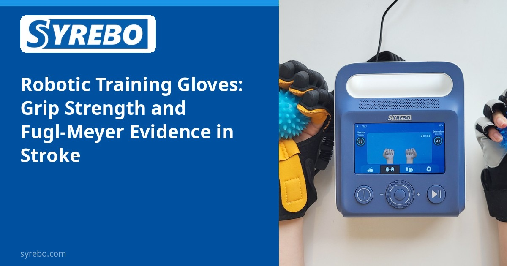

Kolom Riset Klinis Syrebo
Ulasan berbasis bukti tentang penelitian rehabilitasi robotik tangan
Dari artikel
Efficacy of robotic training gloves in improving hand function and movement in stroke patients
Abd Elhady AS, Ahmed GM, Hassan A, Ibrahim SM, Abdelmageed SM
SPORT TK-EuroAmerican Journal of Sport Sciences, 2025, 14, Article 40
DOI: 10.6018/sportk.660321


Bagi pasien stroke dengan fungsi tangan yang buruk, dua hal paling penting: kemampuan menggenggam, dan kemampuan bergerak secara akurat—yang satu soal kekuatan, yang lain soal kendali motorik. Sebuah uji acak terkendali meneliti keduanya.
30 pasien stroke secara acak dibagi ke dalam dua kelompok yang masing-masing berisi 15 orang, membandingkan pelatihan berbantuan sarung tangan latihan robotik dengan kelompok kontrol.
Perbedaan antar-kelompok signifikan secara statistik pada kedua ukuran: kekuatan genggam menunjukkan perbedaan rerata 1.87 (95% CI 0.39–3.35, P=0.015), dan skor fungsi motorik Fugl-Meyer menunjukkan perbedaan rerata 16.67 (95% CI 3.9–29.4, P=0.012). Dengan kata lain, kelompok sarung tangan robotik membaik lebih besar daripada kelompok kontrol pada kekuatan maupun fungsi motorik.
Sampel kecil (n=30); perbedaan antar-kelompok adalah perbedaan rerata.